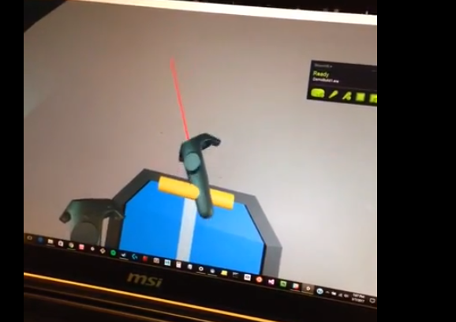
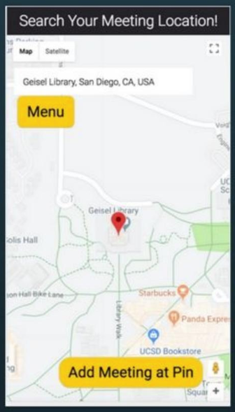
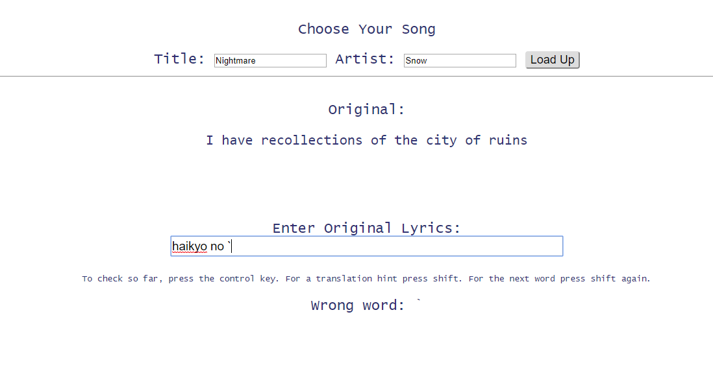
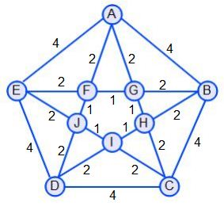

For this project done in UCSD's VR club, I was responsible for modeling a lever and scripting its functionality in C# after animating it in Unity. The lever was created so that the user would interact with the lever in virtual reality when traveling to different worlds and projects created by the UCSD's VR club.
For this project my group and I designed this web app that would notify users when their party members for a meeting were approaching. I used several APIs such as Facebooks and Google Maps for profiling and for locations and map usage. I was also responsible for more design feedback needs such as using Google Analytics for A/B testing.
For this project I lead a group to create a web app for a UCSD course that has users increase their knowledge for a different language and their memory for a songs lyrics. It uses a database to store lyrics and their translations submitted by the users and then is able to display the songlyrics line by line to check for accuracy of the users. It uses Google Translate API to give a hint to the user of what the next word might be. It ultimately records their score and stores it in the database
From one of my more advanced data structures class, we were assigned this project where we took a large actor-movie database and find the shortest path between two actors through movies shared. By creating weighted and unweighted graphs we then used the same database to create a "predictor" to infer which two actors would most likely star in a future film.
